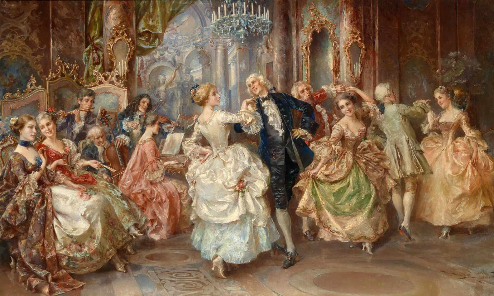

A Beleza Da Dança Em Diferentes Países
Como a dança é capaz de expressar e compartilhar sua cultura, riqueza e sentimentos de todo uma nação através de uma forma de arte dita como “simples”?
A dança é uma forma de arte milenar, e desde os primórdios da humanidade é exercida como forma de expressão tanto social quanto pessoal, sendo muito importante para a cultura de grandes e pequenos grupos. Ela é utilizada para expressar sentimentos e provocá-los em seu espectador. A dança não é apenas algo para ser observada, mas também sentida e compreendida, já que ela representa a cultura e modo de vida de um povo.
A dança sempre esteve presente na sociedade, ou melhor dizendo, desde o surgimento da espécie primata. Ela surgiu primeiramente como um meio de comunicação entre os integrantes do bando, evoluindo para rituais religiosos e hoje em dia, vista como um meio de arte muito importante. Mas por quê?

O tango surgiu no final do século XIX nas margens do Rio da Prata, em Buenos Aires, na Argentina, nas áreas empobrecidas da região. A dança surgiu em meio à um contexto de repressão e marginalização de práticas culturais trazidas pelos imigrantes, era frequentemente associada aos ambientes de prostituição e pobreza. Hoje em dia, o tango é visto como um patrimônio cultural do país, representando sua história e lutas, transmitindo sensualidade, paixão e tristeza.

Fonte: https://www.todamateria.com.br/tango/
Diferente do tango, a dança indiana Kathak tem origens em tradições sagradas ligadas a rituais dentro do contexto hindu. O termo Kathak deriva da palavra sânscrita védica “Kathak”, que significa “história”, e “Kathakar”, que significa “aquele que conta uma história”. Os Kathakars errantes, ou bardos viajantes, contavam histórias, inspiradas em nossos antigos épicos e mitologia, por meio de danças, canções e músicas.

Ao longo do tempo, o Kathak passou a ser apresentado em
cortes reais e a absorver influências da cultura persa e da Ásia
Central, mas manteve suas raízes sagradas. Os artistas de
Kathak exibem histórias por meio de movimentos graciosos
das mãos, amplo trabalho de pés, movimentos corporais
flexíveis e, mais importante, expressões faciais intensas,
capazes de evocar uma variedade de emoções. Sendo um
ótimo exemplo de dança sagrada não europeia que não recebe
tanto reconhecimento.
Fonte: https://www.ipassio.com/wiki/dance/indian-classical-dance/kathak

A Dança Clássica, ou o Ballet, é uma forma de arte que
combina movimento, música e expressão corporal para contar
histórias, além disso, transmitir emoções e celebrar a beleza da
dança. Ele originou-se nas cortes da Itália renascentista
durante o século XV, desenvolvendo-se e recebendo muito
destaque na Inglaterra, Rússia e França, e desde então acabou
tornando-se famosa, admirada e praticada em todo o mundo.
O ballet é uma importante forma de expressão artística e uma
das primeiras formas de dança estruturadas da história da
humanidade.
Fonte: https://anabotafogomaison.com.br/a-historia-do-ballet/

O ballet surgiu como espetáculos
solenes durante o período
renascentista. Esses eram
espetáculos apresentados em festas
aristocráticas, onde músicos e
bailarinos da corte colaboravam para
criar entretenimento para a nobreza.
A coreografia era adaptada nos
passos das danças nobres, os
dançarinos vestiam-se da roupa da
moda e, ao fim, era comum o
“público” entrar na dança.
O início histórico do ballet é,
geralmente, datado de 1581. No dia
15 de Outubro daquele ano, na sala
Le Petit-Bourbon, em Paris, foi
apresentado “Le ballet Comique de
la Reine” (O Balé Cômico da Rainha), sendo que na
linguagem teatral da época, cômico queria dizer “dramático”.
Com coreografia de Balthazar de Beaujoyeulx, música
instrumental de Lambert de Beaulieu e François Cajetan,
música vocal de Jacques Salmon, décors (cenário e figurinos)
de Jacques Patin e texto de La Chesnaye; o ballet durava mais
de 5 horas e fazia parte das comemorações do casamento de
Marguerite de Vaudemont com o Duque Anne (nome
alternativo) Joyeuse.
Ela era irmã da então rainha da França, Louise de Lorraine.
Além de danças, músicas e dramaturgia, esse espetáculo tinha
falas.
Esse é considerado o primeiro espetáculo de ballet da história,
o espetáculo que deu início ao Ballet de Corte.